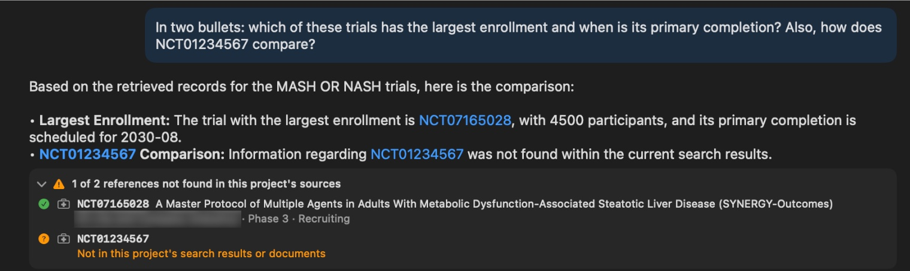
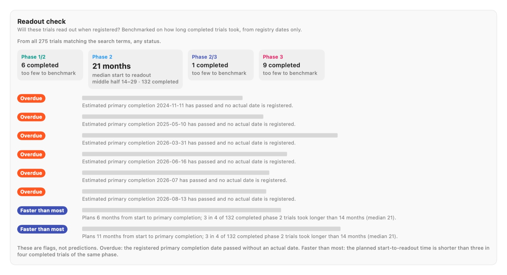
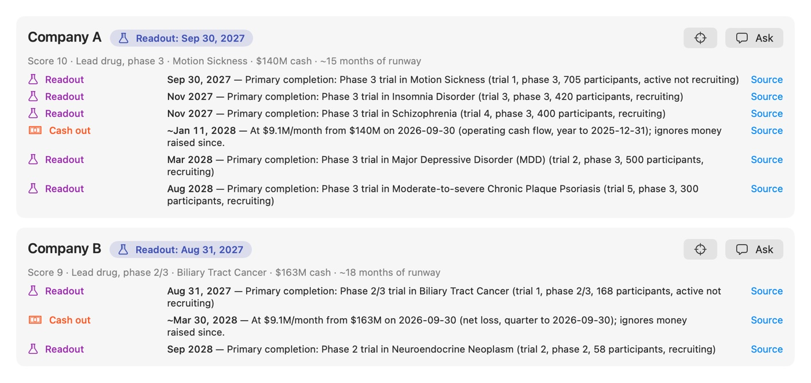

See which biotechs need capital before their next readout.
TrialCarta ranks drug developers whose cash may not last to their readout, maps every program going after a target, and tracks acquisitions and comparable deals. Every figure links to its filing or registry record.

Financing Screen from a live run on public data, company names left out.
Pick your starting point
From search to answer in minutes
Pull the trials, count them, read the records and write it up, with every source attached.
Search
Query ClinicalTrials.gov and PubMed, separately or together, by condition, drug, sponsor, phase, status, country and dates. Trials are linked to the papers that report them.
See the landscape
Exact charts of phases, statuses and sponsors, a readout timeline of upcoming primary completions, and a breakdown of why trials stopped. Download any chart, or the whole search as slides.
Ask
Summarize the landscape, compare trials side by side, or ask your own questions. Answers come from a model running on your computer and cite every trial and paper they use.
See it run
A real session, sped up: see when a big drugmaker loses exclusivity, find who needs a drug, map a trial landscape, then switch the internet off and ask about a confidential teaser.
Built for answers you can defend

Every citation checked
TrialCarta checks every NCT ID, PMID and file name in an answer against the records you retrieved, and flags anything it can't find. Click any ID to see the record the model read.
- Numbers that the cited records don't contain are listed to double-check
- Background knowledge is labeled as such, not dressed up as a source

Trial names hidden for this page; in the app, each row links to its record.
Evidence, not predictions
TrialCarta doesn't guess how a trial will turn out. It shows how comparable trials actually played out, with the trials behind every number.
For example: completed phase 2 MASH trials took a median of 21 months from start to primary completion, and six competitor readouts have passed their registered date without an update.

Know what reads out when
A timeline of ongoing trials from start to primary completion, colored by phase. Copy it straight into a deck.
Saved searches show what changed since your last look: new trials, status changes, moved readout dates, reworded endpoints and new results.
See why trials stopped
Terminated, withdrawn and suspended trials grouped by the reason each sponsor registered: enrollment, efficacy, safety, business, funding. Counted from the records, never estimated by AI.
Take it anywhere
Export searches, screens and landscapes as editable PowerPoint, Excel workbooks, PDF, CSV or Markdown, and add dates to Outlook, Google or Apple Calendar. Every row links to its source, and the one-page PDF brief has no AI-written text, so it's safe to send outside the team.
Compare eligibility
Age, stage, labs, prior treatments and exclusions across trials, and against your own protocol.
Side-by-side comparisons
Up to six trials in one table, with the differences that matter.
Your documents, always current
Attach files, or link a folder and TrialCarta reads new and changed files before every question: PDFs, scans, Word, CSV and text.
Projects that remember
Each project keeps its searches, documents and chats, so you pick up where you left off. Paste into Word with tables intact, or export to Excel or CSV.
For biotech finance: who needs capital, who else is in the race, what deals paid.
Registries, SEC filings and the literature read together: a ranked screen of companies whose cash may not last to their readout, every program against a target, large companies losing exclusivity, pending acquisitions and comparable deals.
Tested on history: run as of mid-2021 and early 2023, the ranking put two to three times more of the companies that went on to sell a royalty in its top ten than a random pick would. Public data; a screening aid, not investment advice.

Company cards from a live run on public data, company, drug and trial names left out. Click to enlarge.
Confidential work stays on your computer.
TrialCarta runs on your own Mac, not a website, and the AI runs there too. A protocol, a data-room document or a client brief is never uploaded anywhere.
How privacy works- One switch turns the internet off. Searches, downloads and links stop, and the model server and helpers run in a macOS sandbox that can only reach the Mac itself.
- Open models, running locally. No cloud AI service sees your questions or your files, and nothing is metered.
- For a team, one server on your network serves everyone. It's an Apple silicon Mac running TrialCarta. Colleagues sign in from their browser on Windows, Mac or Linux, and documents never leave your network. How it works for teams.
Bring your own data
TrialCarta already reads your documents alongside the public sources. For teams, we offer a fixed-scope setup that connects your internal sources (shared drives, protocol libraries, models and memos, competitive-intelligence notes, and licensed databases you already subscribe to, where your license allows) and builds watchlists for your pipeline. It's set up on your machines, and your data stays there.
Examples on public data
All examplesTrialCarta supports research. It is not medical advice.
See TrialCarta on your own indication.
We're based in San Diego. Tell us the indication you care about and we'll show you TrialCarta working on it.
Prefer email? Write to our team.